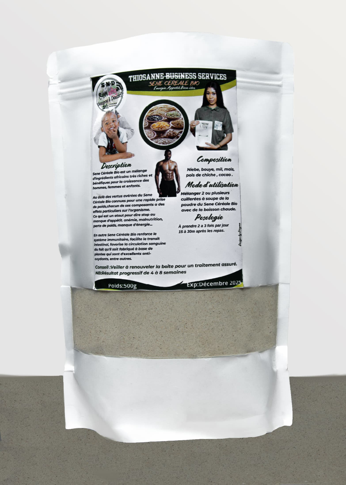
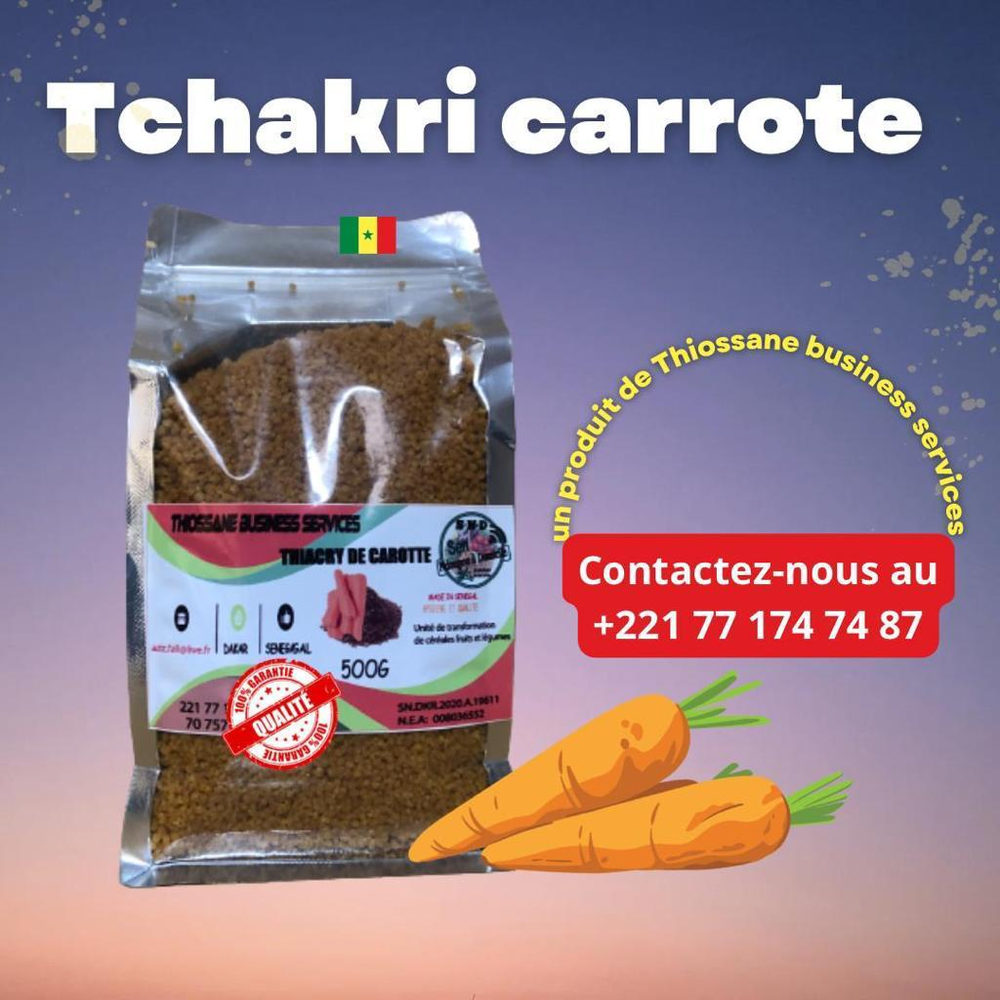
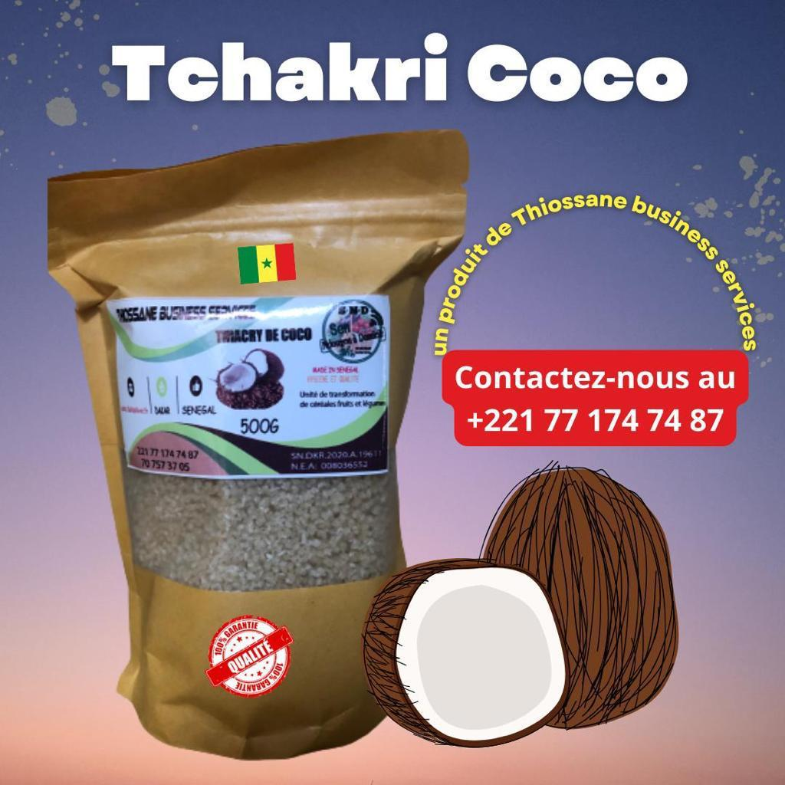
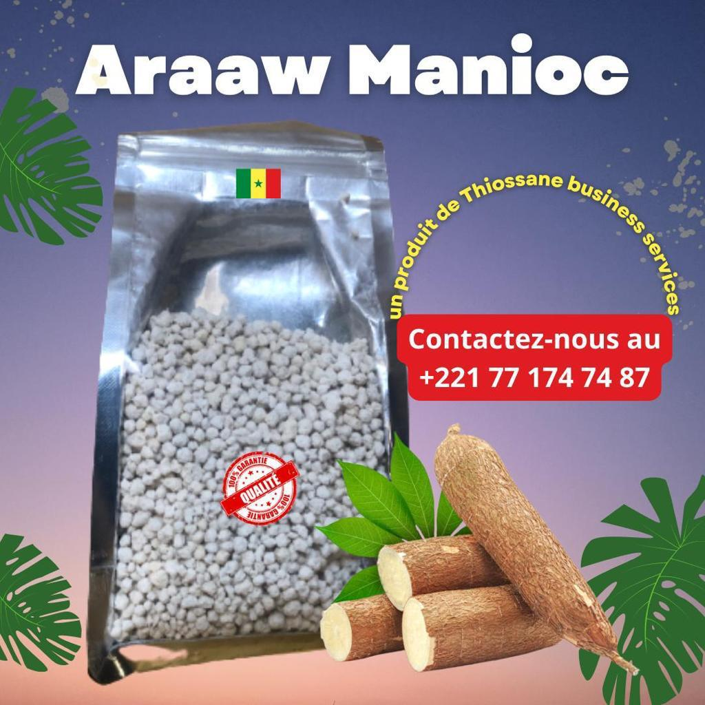
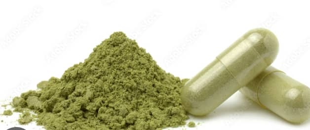
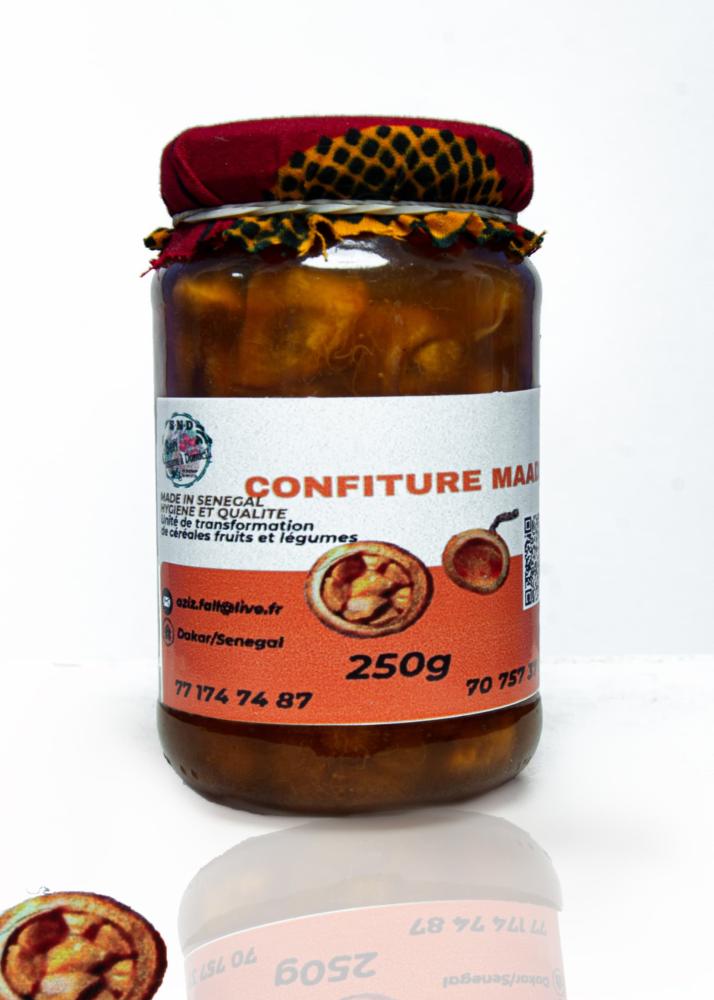

Accueil
Nos Produits
Contact
Farine Infantile
Farine infantile conçue pour répondre aux besoins nutritionnels des enfants, en complément du lait maternel.Fabriquée au Sénégal et vendu à un coût abordable pour les ménages pour contribuer à lutter contre la malnutrition qui affecte le développement des jeunes enfants dans le pays, notamment dans les quartiers précaires, en périphérie du Sénégal.


Le Thiacry carotte contient une bonne quantité de protéines dont les vertus sont parfaites. En effet, elles construisent et renouvellent les muscles, les cheveux ainsi que les ongles. Elles réduisent le facteur de rides sur le visage. Ce qui veut dire qu’elles sont bénéfiques pour les adultes ou les personnes âgées.

Le Thiacry coco contient une quantité exceptionnelle de vitamines et minéraux. Ces éléments essentiels participent au maintien de l’équilibre de la vie du consommateur. C’est notamment grâce à eux que toutes les cellules du corps peuvent utiliser les nutriments indispensables à leur fonctionnement. En plus, chaque vitamine a un rôle ou une fonction importante. Aucune d’entre elles ne manque à l’appel, surtout lorsqu’il s’agit de protéger le corps humain.

Le Thiacry manioc contient de la vitamine A qui est souvent présente sous forme de rétinol. Celle-ci favorise la santé de la peau, augmente vos sens et exerce une action purement antioxydante sur votre santé.
Découvrez cette confiture de mangues. Cette confiture exotique fait sensation sur des crêpes ou même au petit déjeuner, tartinée sur une baguette.

Le moringa est un aliment extrêmement riche en nutriments, vitamines et minéraux. Il est préférable d'en consommer le matin et/ou le midi. Effectuez des cures d'un mois minimum dès que le besoin s'en fait ressentir pour lutter contre la fatigue, des carences nutritionnelles ou pour renforcer l'immunité.
Araw de riz est un granulé à base de mélange de farine de mil et de manioc. Les grains d'araw peuvent être gros ou moyen et sont utilisés en cuisine africaine pour du Lakh ou Fondé au Sénégal.
Le Thiakry de mangue est un couscous à base de farine de mil à gros ou moyen grains délicieusement aromatisé à la mangue. Il est produit à base de farine de mil et de purée de mangue roulée manuellement puis cuit à la vapeur. Le Thiakry ou Dêgué est utilisé en cuisine comme élément de base de plats traditionnels et de desserts. Constitué de farine de mil, il est naturellement sans gluten et riche en Fibres. Le mil est un céréale sans gluten riche en protéine, en minéraux ( fer, magnésium, calcium, zinc, potassium), en acide folique, et en vitamines B. Sachet ou Doypack de 500g Préparation : Ajouter 1 volume d'eau bouillante pour 1 volume de couscous.
INFORMATIONS NUTRITIONNELLES (Pour 100g)
Energie : 1675kJ/396kcal
Matières grasses : 4,2g
dont acides gras saturés : 1.1g
Glucides 76g dont sucres : 0.8g
Fibres alimentaires: 7,2g
Protéines : 10g
Sel : 0,02g
Le Thiakry (Dégué) à la noix de coco est un couscous à base de farine de mil à gros ou moyen grains délicieusement aromatisé à la noix de coco. Il est produit à base de farine de mil et de noix de coco roulée manuellement puis cuit à la vapeur.Le Thiakry ou Dêgué est utilisé en cuisine comme élément de base de plats traditionnels et de desserts. Constitué de farine de mil, il est naturellement sans gluten et riche en Fibres. Le mil est un céréale sans gluten riche en protéine, en minéraux ( fer, magnésium, calcium, zinc, potassium), en acide folique, et en vitamines B. Sachet de 500g Préparation : Ajouter 1 volume d'eau bouillante pour 1 volume de couscous. INFORMATIONS NUTRITIONNELLES (Pour 100g)
Energie : 1675kJ/396kcal
Matières grasses : 4,2g
dont acides gras saturés : 1.1g
Glucides 76g dont sucres : 0.8g
Fibres alimentaires : 7,2g
Protéines : 10g
Sel : 0,02g

La confiture de Madd est un produit obtenu à partir de la cuisson de morceaux de fruits de madd en présence de sucre jusqu'à obtention d'un extrait sec soluble .Description Pour ceux qui ne le connaissent pas bien, le «madd» est un fruit de l’été, un fruit «sauvage» car poussant principalement dans des savanes africaines. Il est cultivé comme un arbrisseau. Il est composé de grains couverts de pulpe et de jus de couleur jaunâtre ou quelques fois rougeâtre le tout enveloppé par une sorte de coque. C’est un fruit très sucré pour certains et très acides pour d’autres. L’enveloppe globuleuse a une peau renfermée que l’on peut déguster également. Il est riche en vitamine C, en thiamine, en riboflavine, en niacine, et en vitamine B6. Thiossane Business-Services vous propose de le déguster confit (avec noyau) avec juste ce qu’il faut de sucre pour compenser son acidité naturelle et vous offrir un maximum de plaisir. Composition : Madd (Saba Senegalensis) du Sénégal (avec noyaux), sucre de canne. Nos confitures sont sans additif ni conservateur. Elle se conservent 1 an après fabrication (de préférence à l’abri de la lumière) et après ouverture à conserver au frais et à consommer dans le mois.